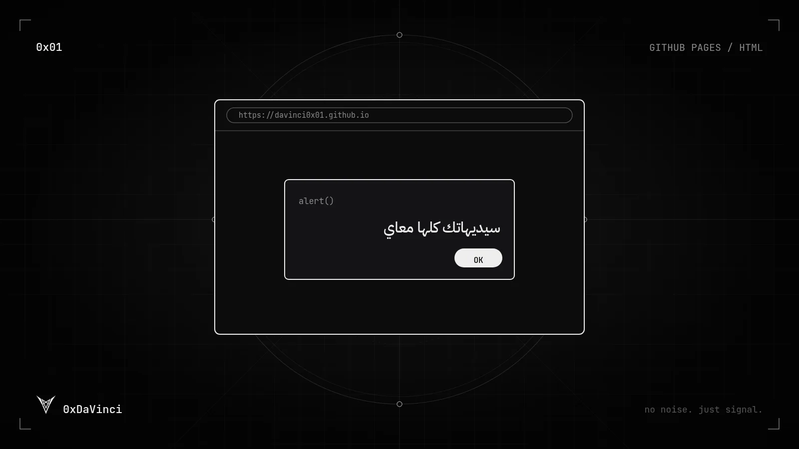

ازاي تعمل مقلب في صاحبك إنك هكرته
ارفع صفحة بسيطة على GitHub Pages في دقايق وابعت الرابط لصاحبك — شرح خطوة بخطوة مع الكود.

مقدمة
في الشرح ده هتتعلم خطوة بخطوة إزاي ترفع صفحة على الإنترنت مجانًا باستخدام GitHub Pages، وتبعت الرابط لصاحبك يفتحه… ويتفاجئ برسالة إنه اتهكر.
خطوات رفع الموقع على GitHub Pages
- سجّل الدخول إلى GitHub: ادخل على github.com وسجّل الدخول أو اعمل حساب جديد لو معندكش.
- أنشئ مستودع (Repository) جديد: اضغط على زر New، اختار اسم للمستودع (مثلاً
my-website)، خليه Public، وبعدين اضغط Create repository. - ارفع ملفات موقعك: تقدر ترفعها يدويًا من زر Upload files أو باستخدام Git من جهازك.
- فعّل GitHub Pages: من صفحة المستودع ادخل على Settings ← Pages، واختار الفرع
mainوالمجلد/ (root)واضغط Save. - هيظهر لك رابط موقعك بعد ثواني في نفس الصفحة، غالبًا بالشكل ده:
https://YOUR-USERNAME.github.io/REPO-NAME/
كود الصفحة
احفظ الكود ده في ملف اسمه index.html وارفعه على المستودع:
<h1>0xDaVinci</h1>
<script>
alert("سيديهاتك كلها معاي")
</script>ولو حابب ترفع بـ Git من الترمينال بدل الرفع اليدوي:
git init
git add index.html
git commit -m "first page"
git branch -M main
git remote add origin https://github.com/YOUR-USERNAME/my-website.git
git push -u origin mainملاحظات مهمة
- اتأكد إن اسم ملف الصفحة الرئيسية هو
index.html. - تقدر تعدل الكود أو تضيف صفحات جديدة براحتك.